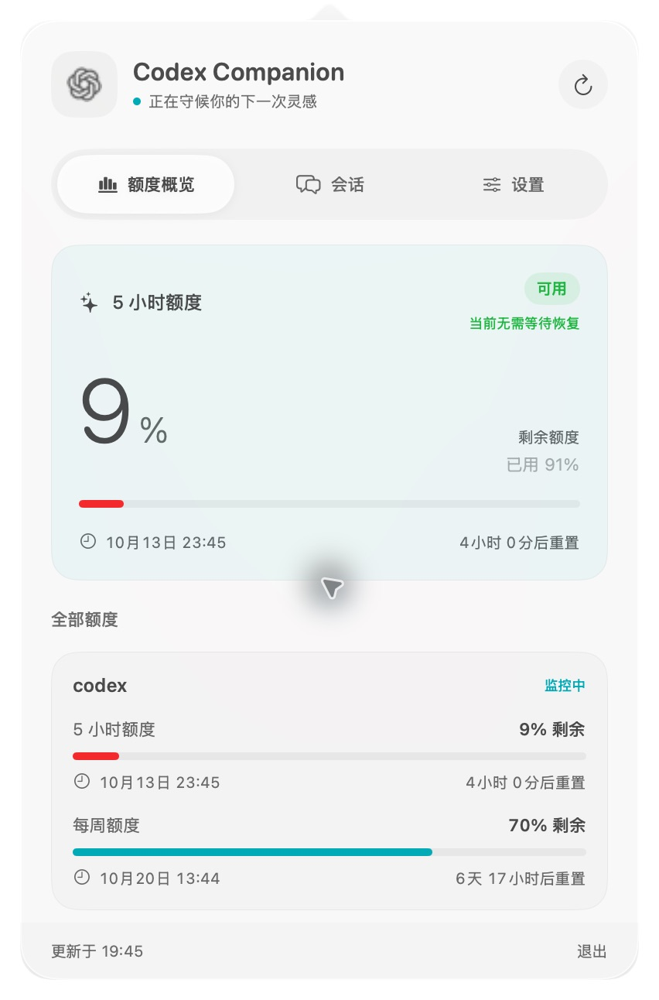
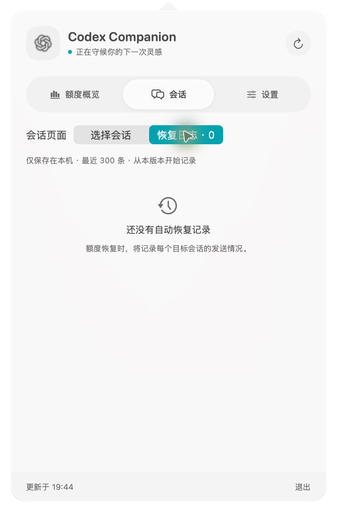

一个小小的 Mac 菜单栏助手
少一点等待，
多一点继续。
额度用完了，先去做点别的。
等它恢复，让选中的 Codex 任务接着做。
Codex Limit Companion 安静地留在屏幕顶部。剩余额度、重置时间、自动恢复记录，点一下就能看见。
下载 macOS 版 ↓v0.0.3 · Apple Silicon · macOS 14+
就在菜单栏里。
点击图标展开面板，点击外部收起。没有需要常驻桌面的独立窗口。




应用实拍，额度为拍摄时的数据；日志展示尚未触发自动恢复的空状态。点击图片可查看大图。
把注意力留给正在做的事。
- 一眼看清额度
- 图标的填充高度表示剩余比例。打开后查看短周期、每周额度、重置倒计时，以及预计恢复提示。
- 只继续你选中的会话
- 搜索并选择最近的任务，设置好继续消息。额度从耗尽恢复为可用后，向这些会话定向发送，不必切换前台窗口。
- 有记录，才放心
- 每次自动恢复都记录触发时间、目标会话、消息与发送结果。本机保留最近 300 条，“已排队”与“执行完成”明确区分。
- 轻轻打开，安静运行
- 原生 SwiftUI，macOS 26 上使用 Liquid Glass。会话按需加载并缓存，后台每 60 秒检查一次额度。
三步，准备下一次继续。
- 安装与登录。把应用放入 Applications，安装并登录支持
app-server和queue的 Codex CLI。 - 选好任务。从顶部图标进入「会话」，选择要恢复的任务；到「设置」填写继续消息，开启定向发送。
- 保持运行。应用先观察到额度耗尽，再等待恢复。触发后，到「恢复日志」查看结果。
建议只开启定向发送，关闭前台粘贴。当前两种方式默认同时开启，可能重复提交；仅前台粘贴需要辅助功能权限。
给 Mac 装上一个小帮手。
打开 DMG，把应用拖入 Applications 即可。升级前请退出旧版。
也可以下载 ZIP · 更新记录与校验文件 ↗
支持 Apple Silicon、macOS 14 及以上。安装包为临时签名，尚未经过 Apple 公证；若被系统阻止，请在「系统设置 → 隐私与安全性」中检查，或从源码构建。Intel Mac 需自行编译。
几个小问题。
额度恢复后，一定会马上继续吗？
应用每 60 秒检查一次，需要先观察到额度耗尽，再观察到所监控额度的全部受限周期恢复可用。休眠、网络故障或额外服务端限制可能延迟触发。预计恢复时间只是估计；启动时额度已经可用，不会补发消息。
日志里的“已排队”意味着任务完成了吗？
不意味着完成，只表示 Codex 接受了消息。失败不会自动重试。前台模拟提交无法确认目标或成功状态，会单独标注；日志不能补录安装前的事件。
为什么 Mac 顶部没有图标？
先检查系统「菜单栏」设置和菜单栏管理工具。macOS Tahoe 可能将开发期间启动的应用错误关联到 ChatGPT/Codex 的菜单栏开关，本应用已开启时也请检查这两项。开启关联项是临时解决办法，不会清除系统关联。
我的数据放在哪里？
设置和恢复日志保存在本机，凭据由本机 Codex CLI 管理。额度查询与消息发送仍通过 Codex 服务完成。本介绍页不使用追踪脚本、广告或第三方字体。
下一次，不必守着重置时间。
有建议，或遇到了问题？在 GitHub 留个 Issue ↗